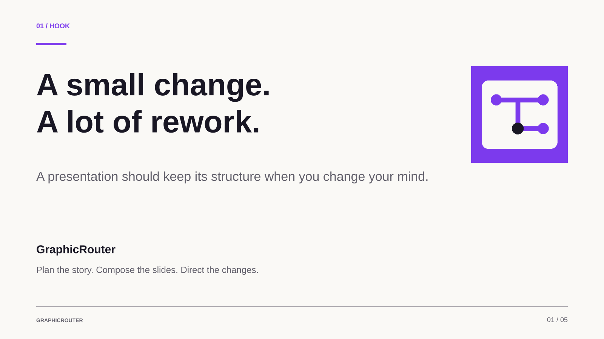
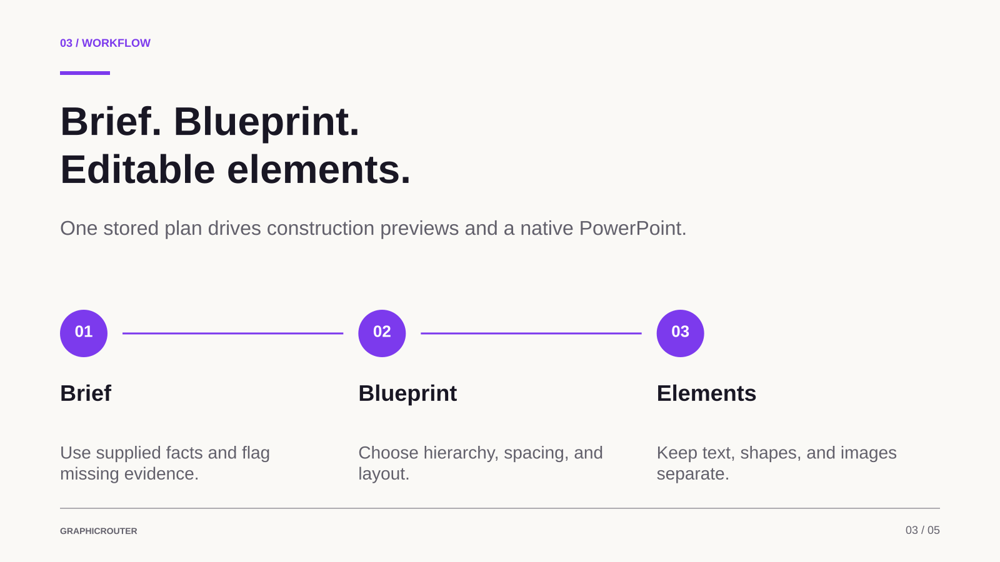

Infographics
Turn processes, comparisons and complex ideas into a clear visual story.
IDEAS NEED DIRECTION. YOU HAVE IT.
Create editable infographics and presentations with a designer’s workflow, right inside ChatGPT. Bring your facts. Shape the story. Keep the details in your hands.
A clear story.
A considered composition.
Every detail, yours to direct.
Workflow illustration · Text and shapes are separate. This is not a live editor.
Start with a blank canvas.
Build something worth sharing.
THE GRAPHICROUTER APPROACH
Good design takes a few considered decisions. GraphicRouter helps you make them in the right order.
Your purpose, your audience, your facts. A short brief fills the gaps and reuses what you already supplied.
Choose the story and visual relationships before placing a single element. Find a hierarchy that makes the message clear.
Place text, shapes and visuals with intention. Every headline and label belongs in its own editable layer.
Inspect the actual design, direct a focused change, and review the Canva result before saving.
DIFFERENT STORIES. DIFFERENT SHAPES.
Turn processes, comparisons and complex ideas into a clear visual story.
Give every slide a message, a composition and room for your voice.
Plan up to 40 presentation pages, a carousel or a tall infographic, section by section.
SMALL DETAILS. CONSIDERED DECISIONS.
Actual prepared engine output.
Explore the story, revision and export.
01 / THE STORY
A prepared pitch, built from supplied project facts. The five-slide format is an example; native presentations can have up to 40 pages.
A small change. A lot of rework.
Give every slide a clear blueprint.
Brief. Blueprint. Editable elements.
Change one element. Keep the rest.
Working locally. Ready for account checks.

02 / A PRECISE REVISION
The same slide, with one focused change. Compare the prepared versions: only the headline colour changes.
“Change only the headline on slide three to violet.”
Original preserved. Try the prepared comparison.

03 / THE HANDOFF
Download the real prepared PowerPoint and its speaker notes. Text and shapes export as separate objects; review the actual result after importing into Canva.
Sample files only — not the plugin installer.
Imagine your presentation is nearly ready. You want to change one headline, but you also need the rest of the deck to stay consistent. Our starting question is simple: can an AI-assisted workflow give us that control? GraphicRouter makes the presentation an explicit plan of editable elements. This pitch is generated by the same slide engine we are showing today.
Core + expanded notes in the sample downloadYOUR NEXT GOOD IDEA STARTS HERE
GraphicRouter runs in ChatGPT. Open its ChatGPT page, install or connect the plugin, and bring your brief. Use the shared link and sign in to ChatGPT; no ZIP installer is needed.
Hosted ChatGPT plugin · No installer download required.
Use the button to open GraphicRouter’s plugin page. Sign in with the ChatGPT account that has access.
Open the plugin in ChatGPT and choose Install or Connect when offered. ChatGPT handles plugin access and installation.
Start a chat with GraphicRouter selected. Add your facts, references or pictures. Connect Canva when you want a Canva handoff.
Use GraphicRouter to create an editable infographic or presentation about [topic] for [audience]. My goal is [goal]. Use these facts: [facts]. Reuse the details I supplied, ask only what is missing, plan the composition, and keep every heading and label separate from the background. Inspect the result before the Canva handoff.A FEW PRACTICAL THINGS
GraphicRouter runs as a hosted ChatGPT plugin. Use the button above to open its ChatGPT plugin page. ChatGPT may require sign-in or workspace approval. Opening this website does not install it.
Connect Canva in ChatGPT to read or edit an accessible Canva design. Native GraphicRouter designs can also export to PowerPoint with separate text and shapes. Review the actual imported result; Canva edits do not sync back.
Editable infographics, presentations of up to 40 pages, tall graphics and carousels. It can plan precise edits to an existing Canva link through the connected Canva tools. The five-slide samples above illustrate one workflow, not a page-count restriction. Images, Canva layers and final appearance still need review.
Make room for
your next idea.